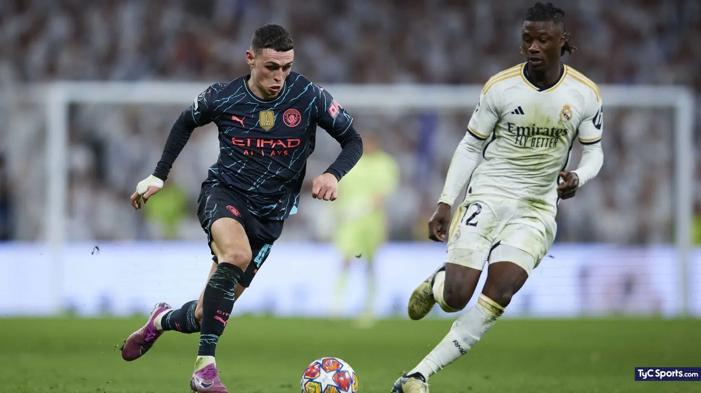

El Real Madrid a la semifinal de la Champions League

El conjunto merengue venció por penales al Manchester City de Pep Guardiola y avanzó a la semifinal.
El equipo comandado por Carlo Ancelotti avanzó a la final tras un partido movido contra el conjunto citizen.
En la ida en el Santiago Bernabeu el Madrid había empatado 3 a 3 con el City. Los goles para el conjunto merengue los hicieron Ruben Díaz (AG 12´), Rodrygo (14´) y Federico Valverde (79´). Para el conjunto Citizen fueron los goles de Bernardo Silva (2´), Phil Foden (66´) y Gvardiol (71´).
En la vuelta, donde se pensaba un partido "sencillo" para el conjunto de Manchester, el Real Madrid dió la sorpresa, ganando por penales tras haber empatado 1 a 1 con goles de Rodrygo (Real Madrid) y Kevin De Bruyne (Man City). En los penales, del Madrid patearon Rudiger, Nacho, Vázquez, Bellingham y Modric, habiendo errado solamente Luka, por parte del City convirtieron Julián Álvarez, Foden y Ederson y erraron Kovacic y Bernardo Silva.
Haaland estuvo desaparecido todo el partido, cómo ya le es costumbre ante el Real, mientras que los héroes del City Bernardo Silva y Rodri no pudieron salvar a su equipo esta vez. Bellingham y Lunin fueron los mejores del campo, pero no olvidemos a Rudiger que hizo un trabajo increible en marcar al 9 noruego.
¿Podrá el Madrid salir campeón y conseguir su Champions número 15?
Volver a inicio